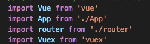

1-顺序：
引入顺序：必须vue在前，vuex在后

声明顺序：必须vuex在前，vue在后

2-子组件要引用一个根组件state的数据
必须使用this.$store.state调用

3-子组件要获取根组件的多个state的数据
根组件数据：
state: {
count: 0,
leo: '你好',
name: 'leo'
},
子组件获取
先引入mapState
import { mapState } from 'vuex'
在写计算属性
computed:mapState({
count: state => state.count,
names: 'name',
leos:'leo'
})
页面渲染
<h3>测试计算属性：{{count}}</h3>
<h3>测试计算属性：{{names}}</h3>
<h3>测试计算属性：{{leos}}</h3>
4-子组件获取根组件多个数据的几种方式：

5-根组件的计算属性getters方法 接收 state 作为第一个参数
可以认为是 store 的计算属性
根组件：

子组件：
getter 函数将导出在
store.getters 对象上console.log(this.$store.getters.doneTodos)
5-根组件的计算属性getters方法
Getters 也可以接受其他 getters 作为第二个参数：
.